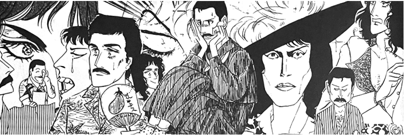
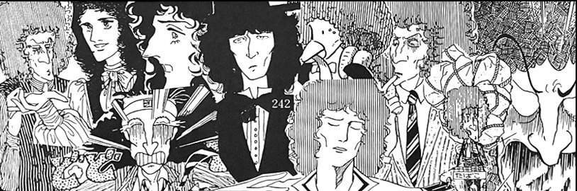
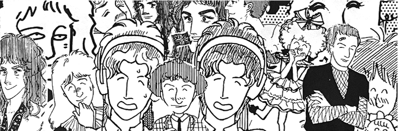
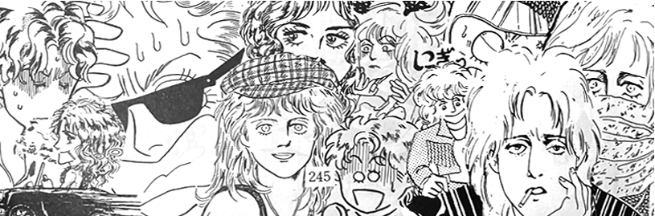
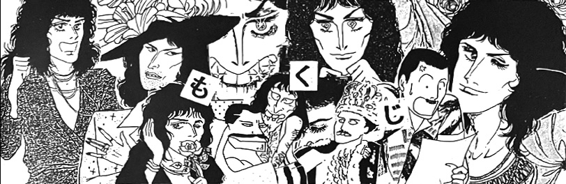
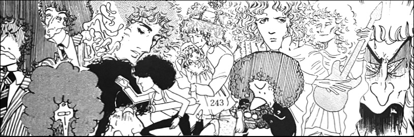
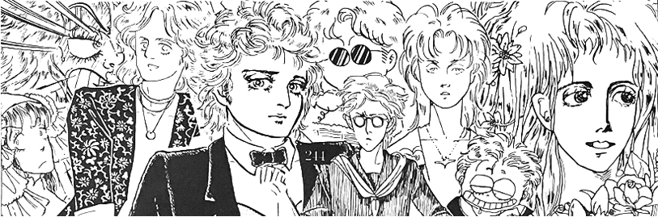

Nestled in between the comics, the artists recount their experiences of discovering Queen, attending events, and building friendships around their love for the band. There are pages and pages of cut illustrations, including some new things drawn in 1992 especially for this volume, as well as many interesting concert reports and personal anecdotes regarding the band's visits to Japan over the years. As could be expected, there are many heartfelt tributes to Freddie.
This volume is of immense value as a documentation of this tiny subculture, where Queen fandom and manga intertwine. Most of these names might otherwise be lost to time.
This book is thicc but I hope to get almost all of it up here eventually. Out of respect for the band, I won't be posting any BL content, but there are plenty of silly comics to enjoy outside of that anyways.

Concert Reports
1975 — Queen in Japan by Joe
1976 —Queen in Japan by Joe
1979 —Queen in Japan by Love Mercury & Gu-minor
1981 —Queen in Japan by Yoko
1982 —Queen in Japan by Manya, Mutsuko, & Taeko
1985 —Queen in Japan by Yoko
1986 —Queen at Knebworth by medousutera
1988 —The Cross's UK Tour by medousutera
1988 —Queen Fan Club Christmas Party by medousutera
1992 — The Freddie Tribute Concert by medousutera

Oral Histories
Our Beloved Queen — How Queen became popular in Fukuoka by Manya2nd Queen Fan Convention at Southport, 1987 by medousutera
Freddie was the Greatest — the Story of November 24th, 1991 by Manya

Full-Length Comics
link
Tributes
link
Bento Comics
link
Cut Illustrations
link
Album Cover Series
link
Omake
link